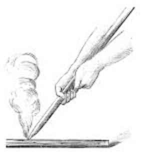

Why To Build A Fire
One of the most important aspects of surviving in the wild, even if it's only for one day, is building a fire. Let's talk about why.
Light
You know how important light is if you have ever had to live past sundown without it. Even in the comforts of your own home light is essential. Have you ever tried to stumble to the kitchen to get a glass of water in the middle of the night with no lights? Imagine what you'll feel like outdoors where there are bugs and animals. You're gonna need light!
Warmth
Outside it can get cold. You are probably used to sleeping inside with sheets and covers to recycle all of your body heat. In a survival situation, you probably won't have that luxury. You don't want the sun to be your only source of heat because it's gonna set eventually and when it does, it's gonna cool down significantly. You're gonna need warmth!
Safety
Lions and tigers and bears...Ok, I guess it depends on where you are surviving. There are, however, a lot of creepy crawlies and animals that would love to find out who the new kid on the block is and if you don't have a fire, they will have no reservations about getting acquainted. A fire will scare off any animal that would otherwise want to get into your supplies and eat your food or any bigger animal that would want to eat you! You're gonna need Safety!
How to Build a Fire
There are many different approaches to starting a fire in the wild. The easiest of these would include a fire starter of some sort. This could be matches, a lighter, flint and steel, a battery with steel wool, or even a soda can. If you don't happen to have any of those things on you and you really are in a survival situation, you will have to be prepared with some more primitive skills. These include friction-based fire making methods like the hand drill, fire plough, and bow drill.
Fire Starter Methods
These are by far the easiest ways to make fire but it requires planning and being prepared. Matches and lighters are cheap and are found in any store. A camping store will even have water proof matches that will still work after you get caught in the rain or take a dip in the lake. Flint and steel requires a little more skill but this is simple to carry with you and a little practice will make you a pro. Check out these videos to see how you can use steel wool and a battery or a soda can to start a fire.
Friction-Based Methods
These methods take more practice and can really be useful if you find yourself in a tough situation. Don't let the first time you try one of these methods be the time that you need it for survival! Make sure you practice these in a controlled environment so you are confident in your skills before relying on them for your only means of fire.
You're gonna need a spindle and a fire board. The spindle is what you're going to use to make friction against the fire board. Make sure it's dry and if you get enough friction, you'll get an ember and that can be used to start fire. Cottonwood, juniper, aspen, willow, cedar, cypress, and walnut are excellent woods to use because they are soft and create a lot of friction. Make sure you also have a nest of tinder to catch the ember once you make one.
For the hand drill method, you'll want to cut a V-shaped notch in your fireboard and place your tinder nest directly under that notch. Start spinning with your spindle and get ready for a work out! Pretty soon you'll be able to rest by a nice glowing fire.
For the fire plough method, carve a small groove in your fire board for you spindle to travel along. Place your tinder nest at the end of the groove and start rubbing the end of your spindle back and forth along the groove. When the ember is generated, it will be pushed right into your tinder nest. When you see smoke, you can start to blow gently and get that fire going.
The bow drill method is similar to the hand drill method but you use a bow to do do some of the work for you. After you make a bow with a curved stick and some cord, you can apply pressure with a socket from the top. twist your spindle down through the cord and move the bow back and forth to spin the spindle.